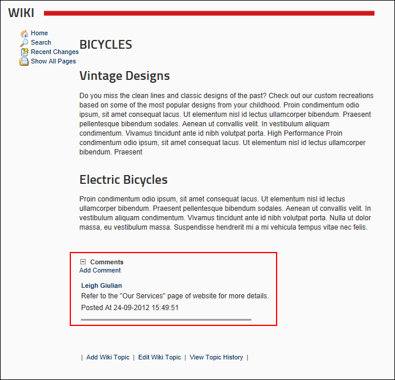

How to view the comment added to a Wiki page. Note: Comments may be disabled.

Tip: You can send an email to the person who posted a comment by clicking on their name which is displayed above their comment.